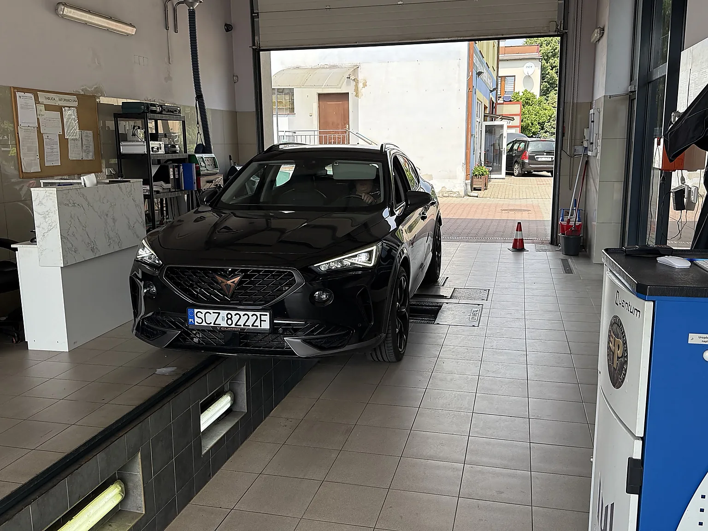

Okresowe badanie techniczne
Standardowe badanie pojazdu zgodnie z obowiązującymi wymaganiami.
Sprawdź dostępnośćStacja Kontroli Pojazdów • Częstochowa
Charakterystyczna stacja IDZIAK po nowoczesnej modernizacji: premium elewacja, pełny widok budynku z Cuprą, czytelna diagnostyka i sprawna obsługa przy ul. Festynowej 26A w Częstochowie.
Wizualizacja premium elewacji i oświetlenia budynku

IDZIAK – lokalna stacja w Częstochowie
Sprawdzamy pojazdy na profesjonalnym, czystym stanowisku diagnostycznym. Klient otrzymuje czytelną informację o wyniku badania oraz elementach wymagających uwagi.
Zakres usług
Zakres konkretnego badania zależy od rodzaju pojazdu i uprawnień stacji. W razie wątpliwości zadzwoń przed przyjazdem.
Standardowe badanie pojazdu zgodnie z obowiązującymi wymaganiami.
Sprawdź dostępnośćKontrola najważniejszych elementów bezpieczeństwa pojazdu jednośladowego.
Zadzwoń przed przyjazdemBadania pojazdów dostawczych w zakresie posiadanych uprawnień stacji.
Potwierdź kategorięBadanie techniczne pojazdów wymagających pierwszego wpisu lub weryfikacji.
Napisz e-mailDodatkowe sprawdzenia wynikające ze skierowania lub zmian w pojeździe.
Ustal wymaganiaWeryfikacja elementów mających wpływ na sprawność i bezpieczeństwo jazdy.
Napisz na WhatsAppPrawdziwa stacja, nowa jakość zdjęć
SEO lokalne i widoczność AI
Strona zawiera naturalne treści odpowiadające na realne pytania kierowców z Częstochowy i okolic. To wspiera pozycjonowanie lokalne w Google oraz lepsze zrozumienie strony przez wyszukiwarki AI.
Krótka lista rzeczy do sprawdzenia przed przyjazdem: oświetlenie, ogumienie, szyby, wycieraczki, dokumenty i stan podstawowych układów pojazdu.
Przeczytaj wskazówkiZużyte żarówki, luzy w zawieszeniu, nieskuteczne hamulce, zły stan opon czy nieszczelności – to problemy, które warto wychwycić wcześniej.
Zapytaj diagnostęIDZIAK SKP przy ul. Festynowej 26A obsługuje kierowców z Częstochowy oraz okolicznych miejscowości, zapewniając szybki kontakt i wygodny dojazd.
Zobacz dojazdNa stronie działają proste przyciski do telefonu, WhatsApp, nawigacji Google Maps oraz udostępniania linku przez aplikacje telefonu.
Udostępnij stronęDojazd i godziny
Dogodny dojazd dla klientów z Częstochowy oraz okolic, m.in. Kłobucka, Blachowni, Poczesnej, Mykanowa, Konopisk, Mstowa i Olsztyna.
Najczęstsze pytania
Od poniedziałku do piątku w godzinach 8:00–17:00, a w soboty od 8:00 do 13:00.
Możesz przyjechać bezpośrednio. Telefon lub wiadomość WhatsApp pozwolą wcześniej potwierdzić aktualny czas oczekiwania i zakres badania.
Użyj przycisku „Udostępnij stronę”. Na telefonie otworzy się lista aplikacji, m.in. WhatsApp, Messenger, SMS i e-mail.
Zadzwoń pod numer 509 736 253 i podaj rodzaj pojazdu oraz rodzaj potrzebnego badania.